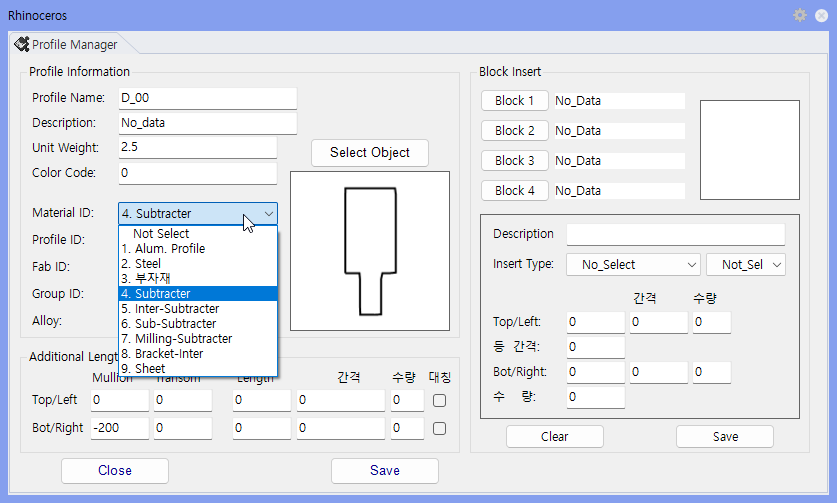

PolyLine Data Input
Polyline Data는 Surface를 Subtract할 형상과 방식을 지정합니다. Mullion과 Transom이 교차하는 구간, 홀 가공, 절단이 필요한 구간에 사용합니다.
Surface에서 잘라낼(Subtract) 형상과 방식을 지정할 때 사용합니다. Mullion·Transom 교차부, 홀 가공, 절단 구간처럼 단면 일부를 제거해야 하는 위치에 Polyline을 두고 Subtracter 종류를 지정하면, 모델링 시 해당 형상이 단면에서 자동으로 빠집니다.
Pname에서 Polyline의 Material_ID 또는 Subtracter 종류를 지정합니다.
| 항목 | 설명 |
|---|---|
| 4. Subtracter | Mullion 또는 Transom Surface 형상을 따낼 때 사용하는 기본 Subtracter입니다. |
| 5. Inter-Subtracter | Mullion과 Transom의 Subtracter가 만나는 교차 부분만 Subtract할 때 사용합니다. |
| 6. Sub-Subtracter | Subtracter 자체를 다시 자르거나 보호할 영역을 만들 때 사용합니다. |
| 7. Milling-Subtracter | 지정된 위치의 Surface를 직접 가공할 때 사용합니다. |
| 8. Bracket-Inter | M-Bracket, T-Bracket 을 생성할때 사용합니다. |